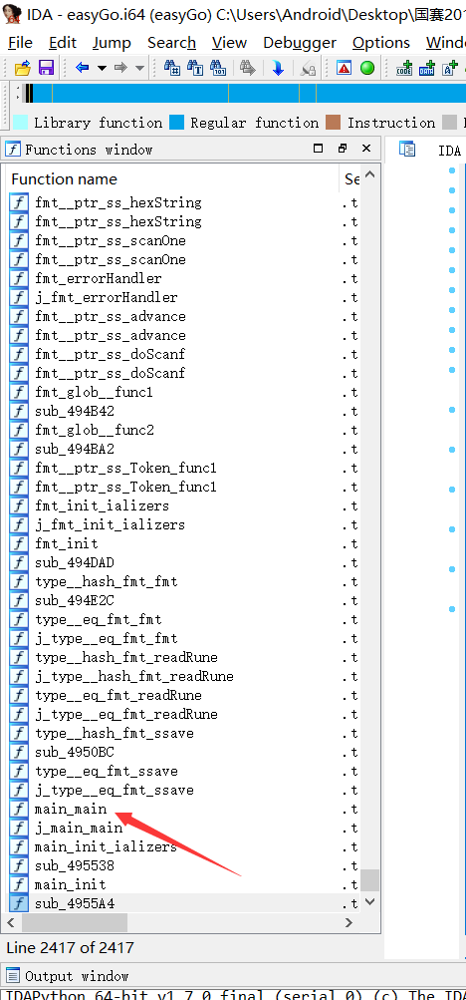
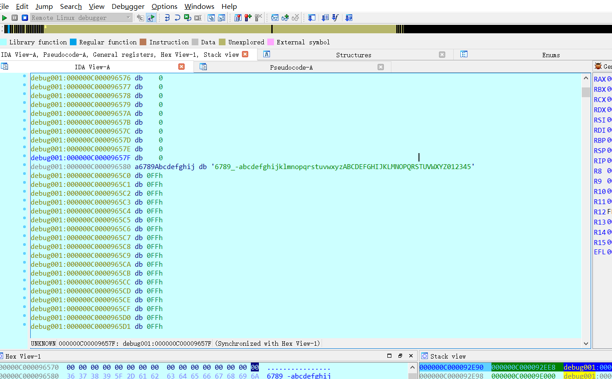
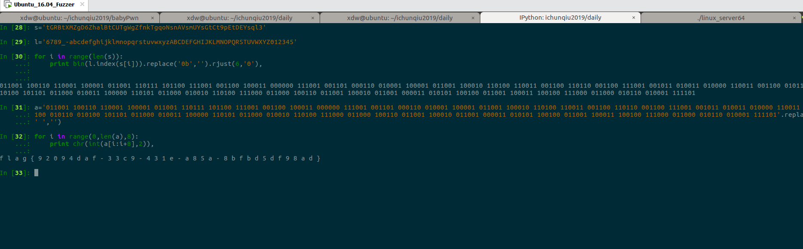
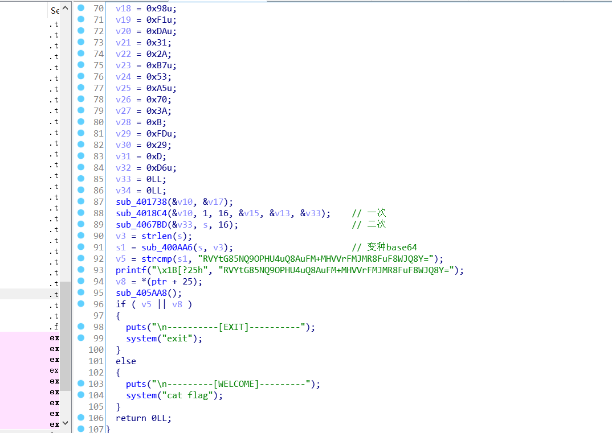
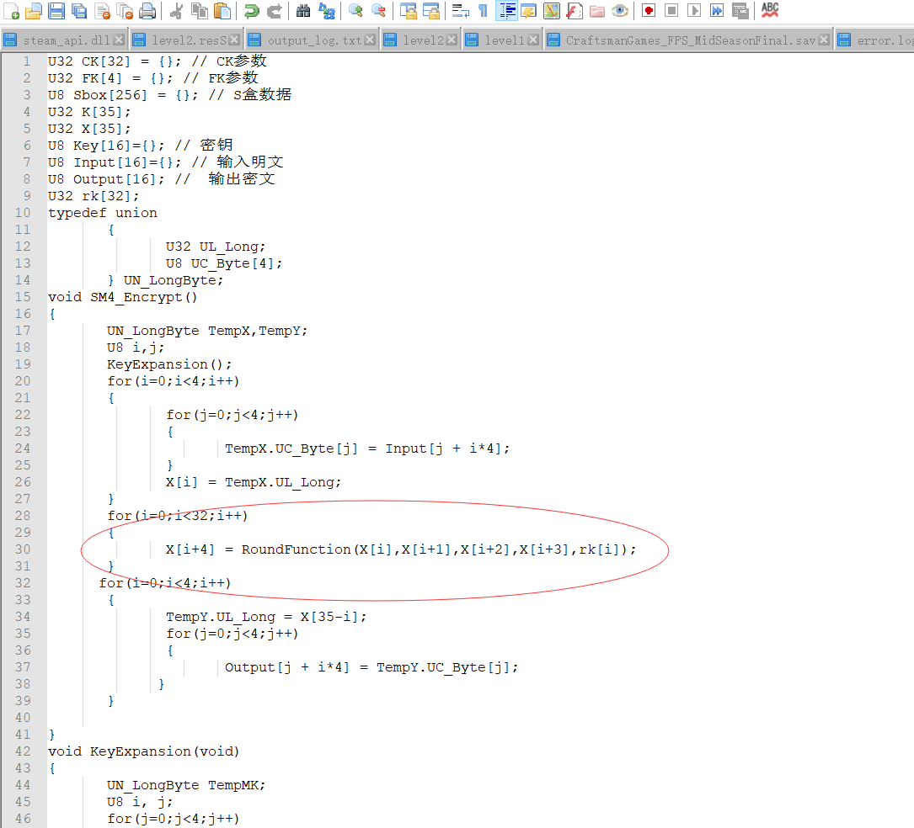
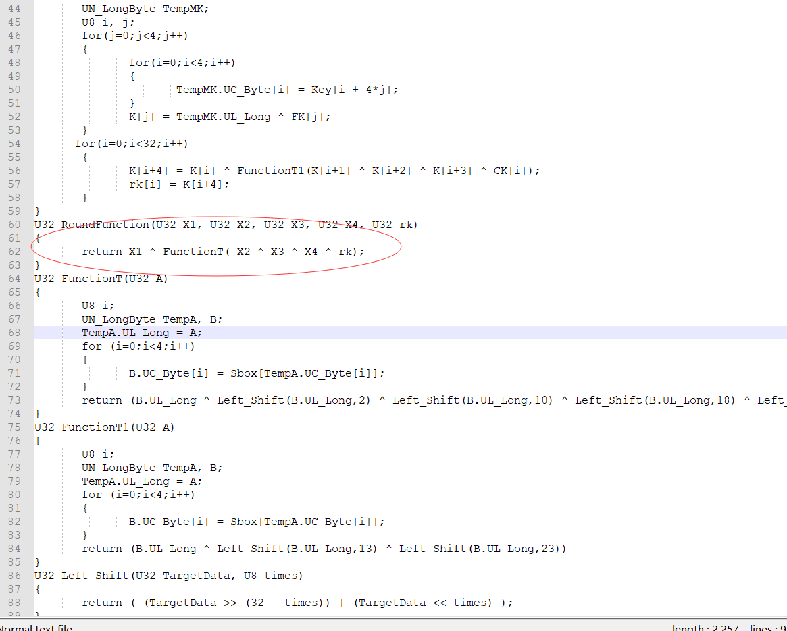
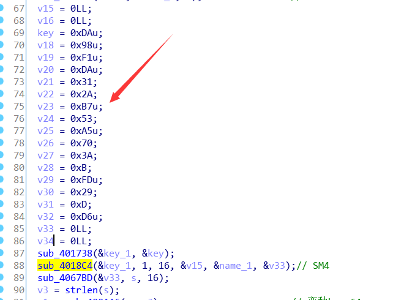
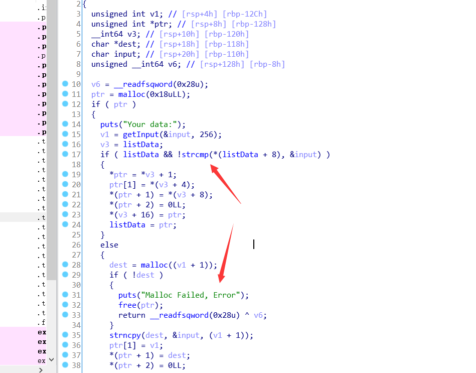

简介
2019年国赛线上赛刚刚结束，就我个人来看，这次国赛的题目还算是比较友好的，至少PWN是如此，这边贴一下做出来的题目的思路。
RE1 easyGo
拿到题目扔DIE查一波有没有加壳&编译信息，发现未显示，根据题目提示发现是GO语言写的，扔ida看一波发现符号表被裁

找不到main函数无法下手，shift+f12也是没有找到与控制流相关的字符串，头疼，网上搜索了一下往年的go题，发现需要恢复符号，github上找到ida插件idaGolangHelper,选择golang版本号进行恢复 。

这边发现符号都恢复了，找到程序的入口点main.main，静态分析一波逻辑。

由于符号恢复的不是特别理想，一开始有些地方是有点模糊的，动态调一下才发现base64表被替换了。

知道了base以后的串以及base64表，输入写个脚本就出来了。

RE2 bbvvmm
根据题目名可以猜出是个vm题，扔ida看了下发现是要你输入用户名和密码，都正确才能输出flag。
一步步往下看，发现有些函数还是特别长的，索性从最后往前分析。

可以看到最后验证正确的话会在远端执行system('cat flag')指令，而要输出flag则必须要V5||V8为0，也就是V5和V8都要是0才行。往上看发现s1与一个类似base64的串进行对比，重点看下sub_400AA6函数内部发现是一个base64的操作，而且base64表又被换过了，emmmmm


随后解一下，结果是EF468DBAF985B2509C9E200CF3525AB6，这边保存一下。
继续往上追溯，发现这个串是输入经过sub_4018C4这个函数加密的结果，静态分析&动态调试调到这边就搞不下去了，里面函数逻辑和涉及的参数都太多，不好分析。


根据调试发现这里的函数按字节拆分，异或等等，类似某种加密，根据放题信息中说的涉及国密进行联想，google了一下国密，找到了常见国密(sm4)的加密源码。


可以看到跟ida反编译后的伪代码是很相似的。

接着往上找，根据sm4的源码分析保存key的参数，找到key。
Gayhub上找到sm4解密脚本，跑一哈，得到用户名。

接下来是密码，一开始没有看到对密码的操作，以为密码可以任意，发现V8||V5那边过不去，猜测V8保存的是对password的认证，给相关内存下断，动态调试了一下发现逻辑很多，猜测是VM，这边利用学弟的逆向引擎建立约束把密码跑出来了,膜拜一哈ORZ。
1 | Concat(0, |
猜测angr和pin也能做，打算看一波dalao的wp后自己去解一下密码。
这边有个坑，最后nc服务器输入用户名密码服务器没有回显，需要在用户名和密码中间加截断。
1 | from pwn import * |
Pwn1 your_Pwn
一道保护全开然鹅却有直接任意地址写&泄露的鸡肋题，漏洞在于数组下标越界，这边贴下exp:
1 | from pwn import * |
Pwn2 Daily
典型的选单程序，漏洞在于remove list指向的堆块的时候没有对idx进行检查，导致其可以为负，从而可以free指定地址的chunk，所以这边存在一个uaf漏洞。
具体利用流程：首先利用free unsorted bin分别获得main_arena、libc基址以及heap的基址，其次，通过heap基址到bss段list之间的距离算出idx，free用户自己分配的fastbin堆块，之后利用edit功能修改其fd为为__free_hook指针，最后malloc两次，利用one_gadget填充__free_hook块来getshell，这边贴一下脚本。
1 | from pwn import * |
Pwn3 Baby_Pwn
打开ida，发现有栈溢出但是没有输出函数，没有输出函数的话就没法再泄露，所以这题不能用常规思路去做，有栈溢出没有泄露函数，联想到0ctf2018的babystack,看了一下，惊了，以为是原题，栈给的空间大小都差不多。
这边利用Dl_runtime_resolve进行利用，这里贴下脚本了。
1 | from roputils import * |
Pwn4 Double
一开始没发现哪里有洞，进程一度卡死，后来才注意到add函数里有这个操作：

意思就是当用户输入的内容相同时，不再重新malloc堆块来存储数据，而是利用指针指向那块堆块内存，这样的话就存在两个指针同时指向一块内存的情况，新建多个fastbin所在的chunk，free掉存储数据的堆块，利用edit函数修改其fd指向__malloc_hook，之后就是fastbinAttack时间了，利用one_gadget写__malloc_hook，getshell，结束。
这边贴一下脚本：
1 | from pwn import * |
总结
这次国赛pwn和逆向都还是比较友好的，难度呈梯度上升，有层次感，相对去年国赛，感觉自己进步还是很大的，一年过去了，人生有几个一年呢？加油加油！